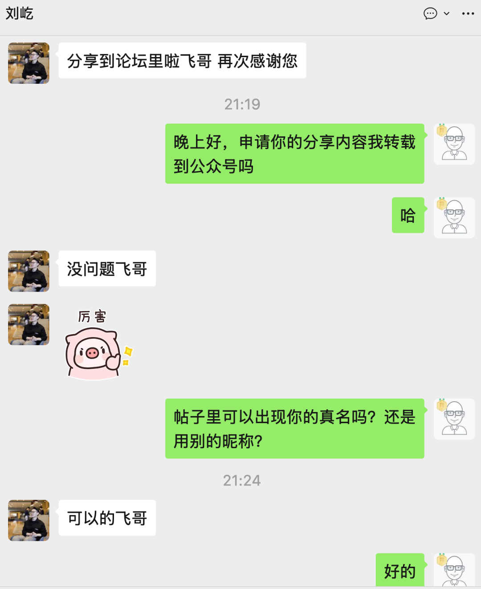
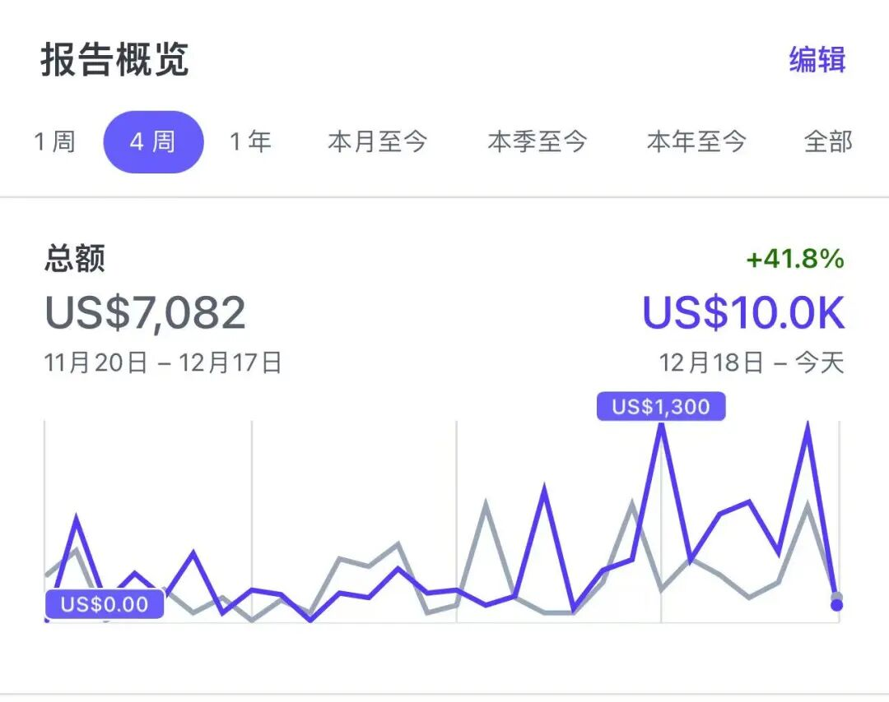

大家好，给大家分享一篇群友刘屹发到社群网站的经验分享帖子，哥飞看完，觉得写得很真诚，所以跟刘屹申请转载给大家学习一下。

以下是分享原文
我是2025年4月入群的，到今天正好达到了过去四周万刀的小里程碑。

首先还是非常感谢哥飞，睡飞大佬，还有蓝星空大哥对我的帮助！
刚入群的时候真是一窍不通，问了很多现在看来很傻的问题。我记得入群的第一个问题就是睡飞回复了我，还加了我的微信，真的是特别感谢；星空大哥更是老站长，稳得不行。
我觉得他们都解的很透彻，而且他们很多的看法理论都是对的，这一点其实非常重要，比如我在入群前和AI瞎聊，最怕的就是聊着聊着其实AI给的回复也是不对的，南辕北辙其实非常致命。
下面我写一下我的收获，希望对群友们有帮助：
1.不要让AI批量生成页面
我自己的老网站就是这么挂掉的，最后的结果就是流量直接清零，过去积累的外链资源还有其他资源都浪费掉了。
尤其当我们正在做一个新的网站的时候，如果让 AI 批量生成大量页面，这样做相当于让谷歌发现你有大量页面用户停留时长特别短，那这是一个非常危险的信号。
其实你换位思考一下，用户点进一个页面，都是AI写的，且AI写的很多东西要么很水，要么都是错的，用户能去停留吗？
那么当你大量页面都是如此的话，就拖垮了整个网站在谷歌面前的信任度，这个时候无论你主动删除页面（相当于疑罪到自己主动认罪）还是放任大量低质页面继续存在其实是左右为难，怎么做都是错的。
我自己的建议是，如果还是一个新站的话，就放弃这个网站，换个域名去建个新站。
这里再次感谢飞哥，当时我还有点舍不得把网站关了，毕竟自己辛苦积累了很多东西在上面，现在看来幸亏听了飞哥的话建新网站，不然现在肯定还是越做越辛苦，救不回来。
2. 外链可以加速发现你的好页面
这个我直接借用睡飞大佬的原话，外链是加速发现你的好页面。
所以我们首先要保证自己每生成的一个新页面都是高质量的好页面，然后才是多发外链，这样可以加速搜索引擎发现你有一些好页面。
好页面定义是，在同样的关键词的搜索情况下，显著比其他竞争对手页面表现更好。
所以，质量为先，在做好质量的情况下多发外链，就是一个正确的事情。
3.出海的机会很多
我这里想引用唐彬森的一句话，好行业和差行业是不一样的，好行业的第十名，第五十名，乃至第一百名，都比差行业的第一名强。
这里出海首先肯定是好行业，在这个基础下，我自己的建议是去做被验证能收费的方向，不要太去追求创新，做已经被验证能收到钱的方向，用户真有需求才是正解。
我们不一定要去做到那个赚钱方向的第一名，但只要比过去的自己强，也能分到一杯羹，不就满足了我们出海的核心需求了吗？
4.从低垂的果实开始摘起
我记得这也是一个群友的分享，我们一上来做页面，当然要去做难度低的词。
新词是可遇不可求的，我们不可能一直什么都不做，就等新词出现。
而难度低的词，是很多的。
做难度低的词，其实就让你有了基本单元的认知。
哪怕这个词搜索量很小，但毕竟相当于你出新手村打了一个一级怪，这没有什么不好的，或者说，如果你这个词很轻松就做到该搜索词下页面的第一名了，那你肯定也更有信心去继续打怪，做更难，搜索量更大的词。
我觉得这样远比你做个很难的词，但由于竞争激烈排名非常靠后，使得你压根拿不到流量，那么后续的一切也就都无从谈起了。
5.论坛里宝藏非常多
反复看，反复学，不要瞎琢磨，跟着群里的经验走， 你去把绝对正确的事情都做到了，那就已经很不错了 。
事实上，把绝对正确的事情都做一遍，就已经很辛苦了，一旦做起来后根本就不会纠结很多事情了，日拱一卒。
6.专注做好自己的站，不要去关心太多无关信息
我觉得一定要非常的专注，SEO我觉得入门后就会越做越有感觉。
其实我现在对SEO也只是一个粗线的认知，必须不断实践，不断反思，专注的在自己网站上去做自己思考的验证，才能真正算入门。
现在每次再去新做一个页面的时候，都感觉对这件事情的理解和一个月前有了很大的区别。
7.如果有可能，还是拿关键词做域名吧
我现在后知后觉，觉得这一点真的很重要。
因为你后续做了那么多页面，不都是围绕这个主关键词做的吗？
那如果还有在网站域名上用这个关键词做门脸的机会，哪怕是用连字符隔开，其实都是非常好的域名。
这一点我在做下一个网站的时候，打算坚决用关键词做域名。
最后，再次感谢哥飞！我觉得哥飞真的算是我人生的贵人了。
现在想想，有人愿意在一个绝对陌生的领域手把手教你基本功，告诉你正确的理论知识和实践知识，是一个多么了不起的事情。
我自己在入群前，光是申请一个水星银行账户，就被人骗了5000块钱，但你在哥飞的群里和论坛里，甚至能看到很多人真实的实践经验，这一点实在是太宝贵了，更不用说有的问题还能得到哥飞和群友的解答。
祝各位都早日月入万刀，日入万刀，一起出海，跟着哥飞赚美金~